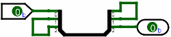

| Library: | Base |
| Introduced: | 2.3.0 |
The Edit tool allows the user to rearrange existing components and to add wires. Exactly what the tool does depends on where the user presses the mouse on the canvas.
When the mouse is over a wiring point for an existing component, or if it is atop a current wire, the Edit Tool will display a small green circle around the mouse's location. Pressing the button there initiates the addition of a new wire. But if the user doesn't drag the mouse far enough to initiate a wire before releasing the button, the press is treated as a mouse click, and so the wire is simply added into the current selection.
The bit width of an added wire is inferred from the components to which it is connected. If it is not attached to any components, the wire will be drawn gray to indicate that its bit width is unknown; if the components at the locations that the wire helps to connect disagree on the bit width, then the wire will be drawn orange to indicate the conflict, and the wire will in fact refuse to carry any values at all until the user resolves the conflict.
All wires in Logisim are either horizontal or vertical, never diagonal.
Wires are non-directional; that is, they carry values from either endpoint to the other. Indeed, a wire can carry values in both directions simultaneously: In the below example, a bit flows from the upper input at left through the center wire, then it circles back through the center wire, and then it circles forward again through the center wire before reaching the output at lower right.

A single drag of the mouse can create multiple wire segments. The precise process is a little confusing in its description; but it works quite intuitively in practice: If you request a particular wire segment using the Wiring Tool, that segment will be split apart wherever it hits a pin for an existing component, or wherever it hits the endpoint of an existing wire segment. Also, if an endpoint of any of the new wire segments hit somewhere in the middle of an existing wire, then that wire will be split into multiple segments itself.
You can also shorten or delete an existing wire segment by initiating a drag at the terminus of the segment and then drawing backwards across the segment. During the drag, the shortening is indicated by drawing a white line over of the portion of the wire that will be removed.
Some components draw short stubs to which wires can connect, such as the OR gate and controlled buffer. Logisim will silently correct attempts to create wires that slightly overshoot the stub's end.
If, however, the user presses the Alt key at a point in the middle of the wire, then the green circle will disappear. A mouse press selects the wire, and a mouse drag moves it.
Pressing the mouse button while it is within a currently selected component begins a drag moving all elements of the selection.
By default, Logisim will compute a way to add new wires
so that no existing connections are lost during the move.
(Sometimes it will delete or shorten existing wires.)
If you're performing a move where you do not want these changes to be made,
you can press the shift key during the move.
If you want to disable this behavior entirely,
go to Project > Options, select the Canvas tab,
and uncheck the Keep Connections When Moving
box;
in this case, the connections are computed only when the shift key is down.
Dragging a selection can lead to unexpected behavior from wires: If you drag a selection including some wires on top of some other wires, all wires are merged, and the merged wires are placed into the selection. As a result, if you drag the selection a second time, the wires previously at the location will not be left behind. This behavior is necessary to keep with the intuitive behavior of wires in Logisim, where wires never overlap. And it does not normally constitute a major problem: Logisim will draw the full selection in the midst of dropping, and you should not drop it until you are sure it is in the correct location.
Pressing the mouse within an unselected component (but not at one of the component's wiring points) drops all components from the current selection and selects instead the component(s) containing the clicked location.
Shift-clicking the mouse within a component toggles that component's presence within the selection. If multiple components include the same location, all components' presence will be toggled.
Dragging the mouse starting at a location not contained within any components drops all components from the current selection and initiates a rectangular selection. All component(s) contained by the rectangle will be placed into the selection.
Shift-dragging the mouse starting at a location not contained within any components initiates a rectangular selection. The presence in the selection of all component(s) contained by the rectangle will be toggled.
However, if the Alt key is pressed at a location not contained within any components, this initiates the addition of a new wire. A small green circle is drawn in such a circumstance to indicate this.
After selecting the desired items in the selection, you can of course cut/copy/paste/delete/duplicate all the items via the Edit menu.
Some keys have an effect with the Edit Tool.
The arrow keys change the Facing attribute for all components in the selection that have such an attribute.
The Delete and Backspace keys will delete everything in the selection from the circuit.
The Insert and MenuKey-D keys will create a duplicate of the currently selected components.
Logisim's behavior when duplicating a selection or pasting the clipboard into a circuit is somewhat peculiar: It will not immediately place the components into the circuit; instead, the selection will be a collection of "ghosts," which will be dropped into the circuit as soon as they are either dragged to another location or removed from the selection. (This peculiar behavior is necessary because pasting will otherwise merge the wires of the selection into the current circuit at once, and the wires there previously will be dragged with the pasted clipboard if the user wants to move the pasted components somewhere else.)
None. Selecting a component, though, will display its attributes. With multiple components selected, attributes shared by all are shown, blank if they have different values and otherwise with the value they all have in common. (Wires are ignored if there are any non-wires in the selection.) Changes to the attribute value affect all selected components.